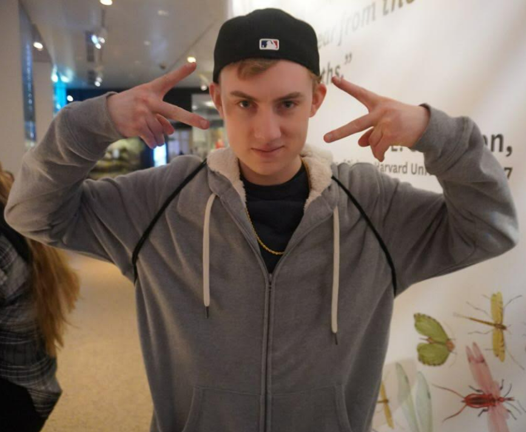
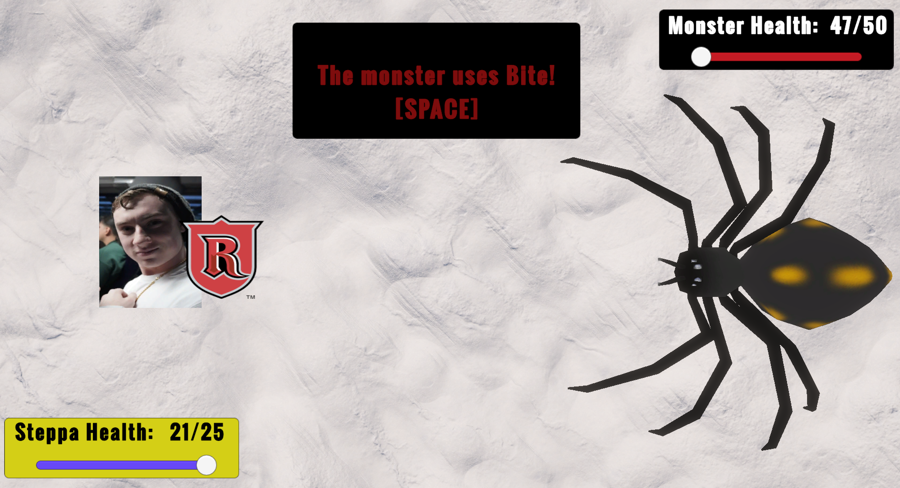

Unity • RPG
The Big Steppa
An RPG that was developed on Unity in a weekend for the Rutgers Creation of Game Society's Fall 2024 Scarlet Game Jam. Strategically fight as Big Steppa (AKA me!) against a massive spider, that uses random bid probabilities to drop different attacks on you!

About the Project
The Big Steppa is a turn-based RPG game that was made in two days for the Rutgers Creation of Games Society Fall 2024 Scarlet Game Jam. Attack, heal and defend as the Big Steppa (me!) against a massive spider! The spider is the game's enemy to fit the "Bug" theme of the Game Jam. In addition to being a fast and fun game to play, The Big Steppa gave me the opportunity to embrace my bold, charismatic side that is now used in game projects I develop to this day!
Team: Dylan Abry (Lead Designer and Developer)
Gameplay & Media
"The Big Steppa" Gameplay
This gameplay shows the turn-based sequence of the player and enemy using moves in The Big Steppa. Features, both attack forms, along with healing and defending, along with corresponding animations from the spider.

Big Steppa!!
The original photo of me that was taken and was used for the game's title screen image.

Big Steppa Defends Himself
Big Steppa holds the Rutgers shield to defend himself as the spider prepares for a bite attack!
Big Steppa "Game Over" Image
Big Steppa "Game Over" screen image of me.
What I Built
- RPG Game State Management: Developed a turn-based combat system that coordinates player and enemy actions, health, damage, healing, defense, special abilities, and victory/death states. The player can choose between Stomp attacks, drinking a beer to restore health, using the Rutgers Shield for defense, or activating Ultrasteppa for over double damage. Ultrasteppa is controlled through its own turn-based charge state, requiring four turns before the ability becomes available and preventing it from being repeatedly used without recharging.
- Probability-Based CPU Move System: Created randomized decision logic for the Spider enemy that selects between three different offensive moves: Jab, Bite, and Venom. Probability-based selection introduces variation into the Spider's turns so the player cannot rely on a completely predictable attack sequence, while each selected move feeds into the same underlying turn, damage, and combat-state systems.
- 3D Animator State Management: Integrated the Spider's four 3D animation states with its combat logic, including Idle, Attack, Take Damage, and Death. Gameplay events trigger the appropriate animation state as combat progresses, allowing attacks to transition out of idle behavior, player damage to produce a visible hit reaction, and zero health to transition the Spider into its death sequence. This keeps the character's visual behavior synchronized with the underlying RPG state.
Technical Challenges
- Building an Interconnected RPG Combat System Within a 48-Hour Game Jam: The Big Steppa was developed during a two-day game jam, requiring the core combat architecture to be designed, implemented, tested, and integrated within a strict 48-hour development window. I prioritized a reusable turn-based state system that could support attacks, healing, defense, enemy decisions, health, animations, and the Ultrasteppa charge mechanic without implementing each feature as an isolated gameplay sequence. Working under the time constraint required careful scope management and rapid debugging while still producing a complete playable combat loop by the end of the jam.
- Synchronizing Combat Logic with Character Animation States: The Spider's animation needed to remain synchronized with a combat system that could place the enemy in several different states during a turn. I connected gameplay events to the Animator so attacks trigger the appropriate attack animation, incoming damage produces a hit reaction, and reaching zero health transitions into death rather than returning to normal combat behavior. Managing these transitions required ensuring that gameplay state and visual state remained consistent as turns and combat outcomes changed.